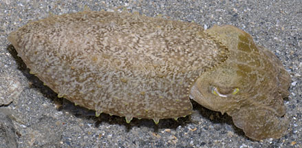
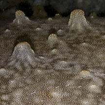
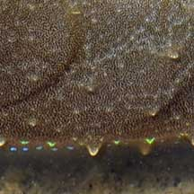
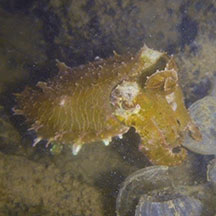
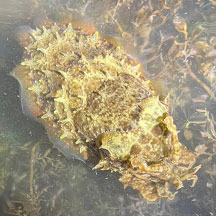
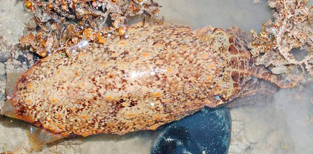
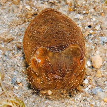

|
|
| cephalopods text index | photo index |
| Phylum Mollusca > Class Cephalopoda > squids and cuttlefishes > Family Sepiidae |
| Broadclub
cuttlefishes Sepia latimanus Family Sepiidae updated May 2020 Where seen? This plump cuttlefish is sometimes seen near reefy areas, hovering slowly close to the ground. Elsewhere, considered among the most common cuttlefishes in reefs to 30m deep, and also among the largest of cuttlefishes. On the intertidal, smaller juveniles may be seen. Larger adults found in deeper water among reefs. Features: 4-6cm long, elsewhere can grow to 50cm long and weigh 10kgs! Distinguished by a yellow ring around lower edge of the eye. Squat oval body with short tapered arms. Narrow transparent fins all around the body. There is a pattern of small bumps extending into the fins along the edge where the fins attach to the body. Patterns include mottled bands with circles, to more muted bands. When alarmed, it tucks its arms under its heads and the tips of the middle arms are often held upright. What do they eat? It preys on fishes and crustaceans, apparently mesmerising or distracting them by producing a rapid rhythmic pulsation of dark bands along the body and arms. Broad babies: According to Norman, this cuttlefish lays its egg capsules deep inside branching hard corals, typically Pore hard corals (Porites sp.). A male cuttlefish establishes a territory over coral colonies suitable for egg laying. The female approaches the male, mates with him, then lays the eggs deep among the coral branches where they harden and are hard to remove. The eggs hatch in 4-6 weeks. Juveniles hide among coral and may mimic brown or yellow mangrove leaves in colour, pattern (complete with stem, ribs and scattered spots) as well as floating movement in the water. More about cephalopod eggs. Human uses: The cuttlefish is an important commercial seafood harvested by trawl, setnet, jig, handline and spear. |
|
 Tanah Merah, Dec 11 |
 |
|
 Young cuttlefish resembles a floating mangrove leaf with midrib, veins and stem. Tanah Merah, Oct 09 |
 |
| Broadclub cuttlefishes on Singapore shores |
On wildsingapore
flickr
|
| Other sightings on Singapore shores |
 Sentosa Serapong, May 16 Photo shared by Ivan Kwan on facebook. |
 St John's Island, Feb 24 Photo shared by Kelvin Yong on facebook. |
 Terumbu Semakau, Nov 12 |
 Pulau Semakau, Oct 13 |
| Filmed on Pulau
Hantu, Jan 11 cuttlefish 22Jan2011 from SgBeachBum on Vimeo. |
|
cuttlefish @ tanah merah from SgBeachBum on Vimeo. |
| Acknowledgement Grateful thanks to Tay Ywee Chieh for identifying this cuttlefish. Links
|